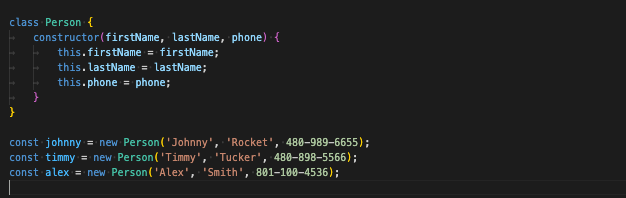

Forms
Forms are an excellent way to collect data from users. It is often used for sign ups, or sending messages in a website. To start a form, you simply use a form tag. Inside the form tag, you can put inputs, radio groups, and anything else you need from the user.
Example form:
Object Oriented Programming
Object Oriented Programming (OOP) is a common way for organizing code. It is like having template objects. For example, if you want to create an object for a person, like your friend.
The properties of the attribute would include their first name, last name, phone number, and a picture. So you create one for your friend Johnny. But now your friend Timmy wants one, so you create a whole new object for him. Then another friend, then another, etc.
Instead of creating an object for each friend, that is where OOP comes in. You create a general class called something broad like Person. This class has the same properties as Johnny but now Timmy and your other friends can take from the same class.
Here is an example:
Modular JS
Using Modules for JS is a great way to keep code bases tidy and clean. With code bases thousands to millions lines of code, having modules is very important. Having modules also allows you code to be more testable. If you have a complex function, it is better to put it in its own file, with a test file nearby.